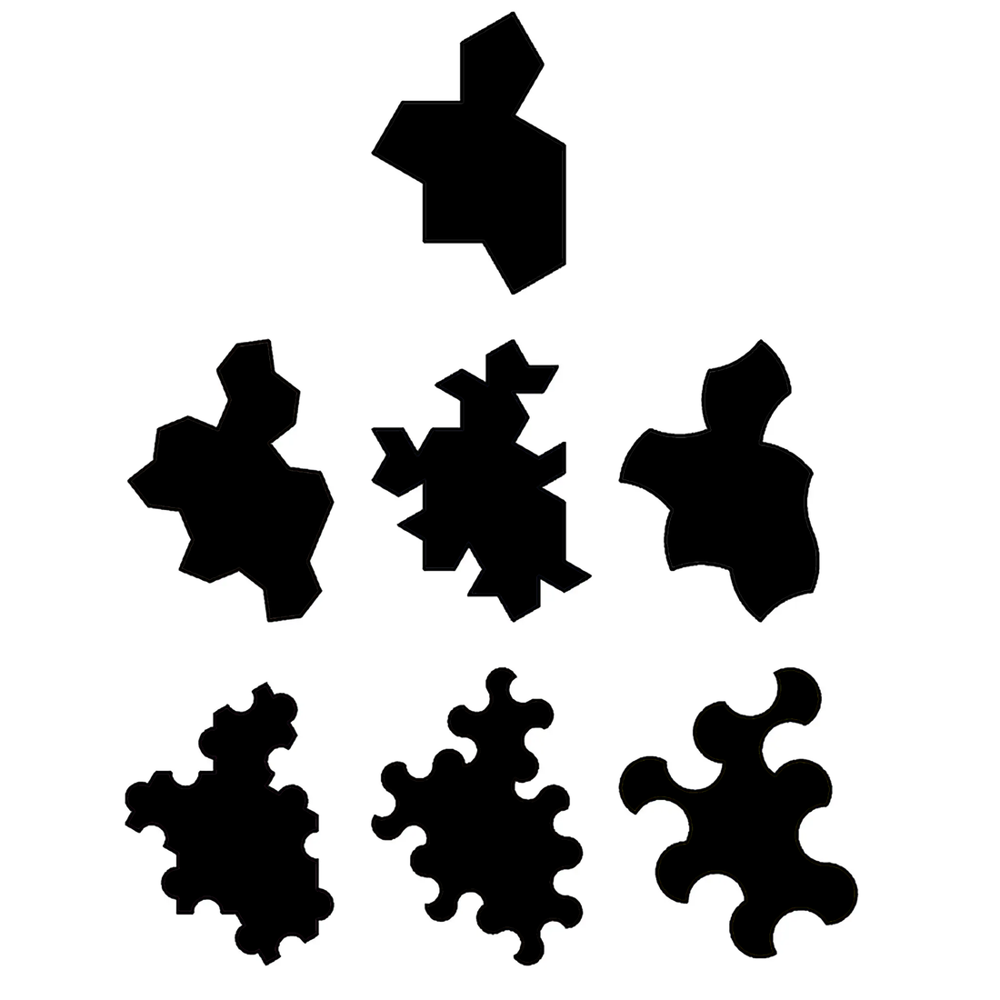

Main Page
The aperiodic monotile research wiki — concepts, mathematics, and application frontiers.
Welcome
Welcome to the Aperiodic Monotile Research Wiki, a field guide to the geometry, mathematics, and emerging applications of aperiodic monotiles — single shapes that tile the plane forever without ever repeating.
This wiki is maintained by the team behind Aperiodic Monotile Generator. It distills the peer-reviewed literature (70 sources and counting), tooling lineage, and practical workflows into cross-linked articles you can cite, share, and build on. Every figure is real generated monotile geometry — no placeholder patterns.

{kind=link}
Featured articles
- Aperiodic monotile — the core definition and why it matters
- Spectre tile — the strictly chiral monotile discovered in 2023
- Hat tile — the first aperiodic monotile, March 2023
- Substitution tiling — how one tile grows into an infinite hierarchy
- Moiré and aliasing — layered arrays, phason rivers, and moiré navigation
Browse by category
Concepts
Aperiodic order, monohedral tilings, chiral vs achiral tiles
Start with Aperiodic monotile →Mathematics
Spectre, Hat, Tile(1,1), substitution rules, undecidability
Start with Spectre tile →Applications
Graphics, design, fabrication, education, and research frontiers
Start with Computer graphics →Resources
Generators, datasets, museums, fabrication files, OEIS, and built installations
Browse resources & tools →References
{len(REFERENCES)} curated scholarly sources plus an automated discovery registry
Open the bibliography →Application guides
- Computer graphics
- Design, art, and architecture
- Materials and fabrication
- Education
- Signal processing and imaging
- Waves, acoustics, and photonics
- Materials science and fluids
- Robotics and mobility
- Biology and medicine
- Algorithms and machine learning
Categories: Research